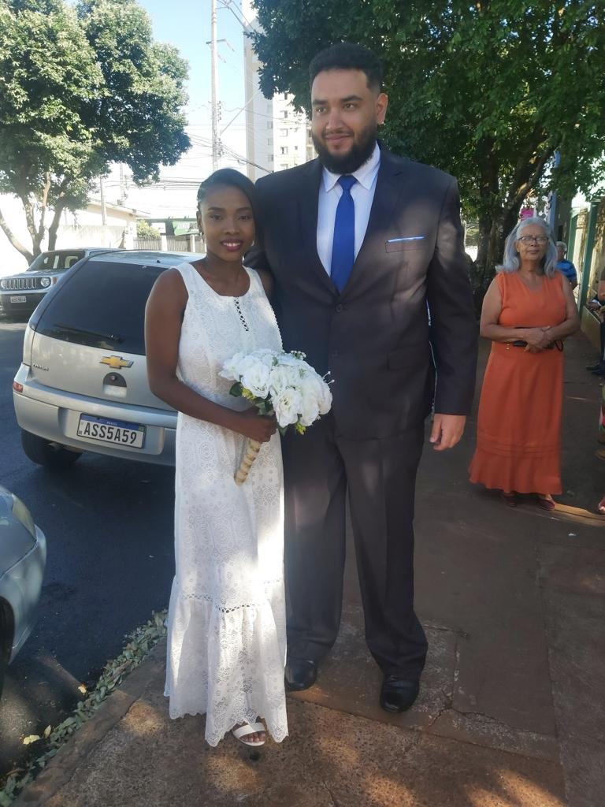

Mesmo com todos os obstaculos da vida permanecemos juntos, sei que nao foi um bom fim de semana e sei que a culpa é minha. Mas quero te lembrar do dia mais feliz da minha vida, que foi quando casamos. Lembro de estar tremendo, e ate gaguejei na hora de dizer sim. So quero dizer que mesmo com todas as dificuldades e problemas quero permanecer ao seu lado. Voce me torna um homem melhor e nao quero deixar que o alcool destrua tudo que tenho. Quero ter filhos com vc e ser um bom pai. Quero envelhecer ao seu lado e estar com vc ate ficar velhinho e morrer. Pois voce é a luz que ilumina toda escuridao que tenho. Voce é o farol que me guia quando estou perdido. Voce é linda, uma esposa incrivel e maravilhosa. Amo cada minuto desses 3 anos juntos e que venham muito mais anos!
Te amo Edna ❤️
